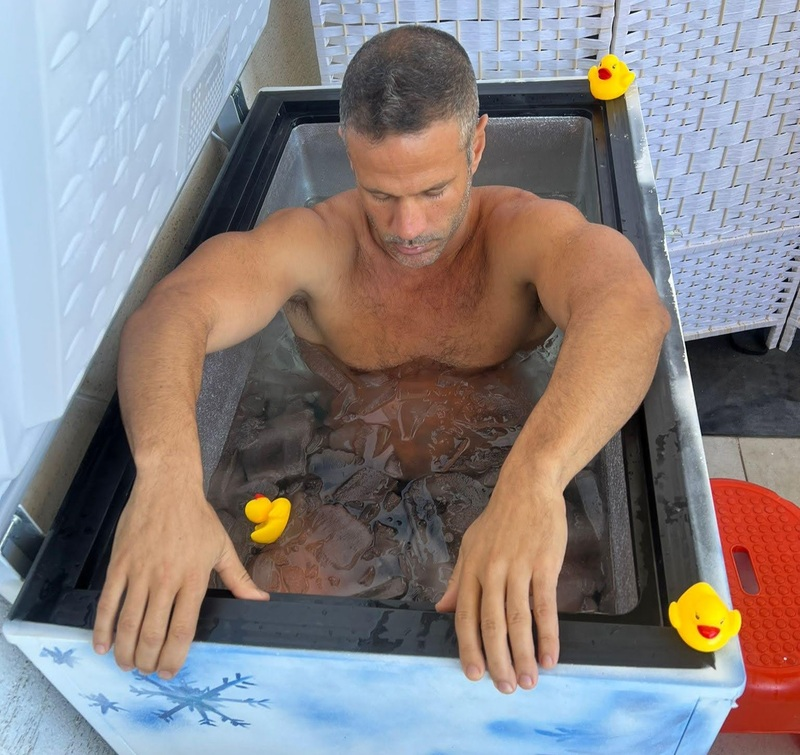

חשיפה לקור

חשיפה לקור נחשבת כמועילה להפחתת דלקות, הקלה על כאבי שרירים, שיפור המערכת החיסונית ועוד, אך אילו מהסגולות הללו אכן נתמכות במחקר מדעי?

חשיפה לקור, הפכה לפופולרית בשנים האחרונות ונתפסת בעיני רבים ככלי לשיפור הבריאות. לחשיפה לקור מיוחסות מספר סגולות כגון שיפור מחזור הדם, חיזוק המערכת החיסונית, הפחתת דלקת והקלה על כאבים בשרירים לאחר אימונים. בנוסף נטען שהיא משפרת את מצב הרוח והגברת חילוף החומרים.
למרות הפופולריות הגוברת והסגולות הרבות המיוחסות לחשיפה לקור, מרבית המחקר המדעי הקיים מצביע על יתרונות פוטנציאליים בלבד ואינו מספק די נתונים כדי לאשש את הטענות הללו.
כיצד מתבצעת חשיפה לקור?
ככלל, חשיפה לקור מתבצעת באמצעות חשיפה של הגוף או חלקים ממנו למים קרים או לאוויר קר.
חשיפה למים קרים או "אמבטיות קרח" מתבצעת לרוב בטמפרטורה של 10°–15° למשך 5 עד 10 דקות, כשהמים מגיעים עד הצוואר והידיים, שהן רגישות במיוחד לקור, נשארות מחוץ לאמבטיה או בתוכה. מתרגלים מנוסים עשויים לטבול במים בטמפרטורה של כ-0° למשך 15 דקות ויותר.
חשיפה לאויר קר או קריותרפיה מתבצעת לרוב על ידי חשיפת הגוף לאוויר בטמפרטורה של 100°- ועד 190°- (מינוס מאה תשעים מעלות צלסיוס!) למשך 3 עד 4 דקות בתוך מתקן ייעודי.
חשיפה לקור מהווה בעיקר אתגר מנטלי, ולכן לפני החשיפה ובמהלכה מבצעים תרגילי נשימה להרגעת הגוף.
חשיפה לקור ככלי לטיפול בדיכאון
במטא-אנליזה שבדקה את האפקט של קריותרפיה על בריאות הנפש, נמצא שהטיפול מפחית באופן ניכר סימפטומים של דיכאון. עם זאת, ראוי לציין שמתוך 196 מחקרים שנסרקו, רק 10 עמדו בקריטריונים שנבחרו על ידי החוקרים, ומתוכם רק 6 היו מחקרים מבוקרים, שנעשו על סך הכל 294 נבדקים. בעוד שתוצאות המחקרים מראות שיפור משמעותי אצל כלל הנבדקים, ההבדלים בין הנבדקים היו גדולים, וקשה להסיק מתוצאות המחקרים מסקנה גורפת.
חשיפה לקור ככלי לשיפור איכות השינה
מחקר שנערך על 22 נבדקים בדק האם קריותרפיה לאחר אימון ערב תורמת לשיפור איכות השינה. הנבדקים התבקשו לבצע ריצת ערב במשך 25 דקות, ולאחר מכן קבוצת הטיפול ביצעה קריותרפיה בטמפרטורה של מינוס 40° צלזיוס למשך 3 דקות, בעוד קבוצת הביקורת עברה התאוששות פסיבית. תוצאות המחקר הראו שאיכות השינה של קבוצת הטיפול הייתה טובה יותר, הן מבחינה סובייקטיבית (על ידי מילוי שאלונים) והן מבחינה אובייקטיבית (על ידי בדיקת אא"ג). עם זאת, התוצאות תקפות בעיקר עבור מתאמנים שרצים בערב, ואי אפשר להסיק מהמחקר מסקנות גורפות לגבי כלל האוכלוסייה.
חשיפה לקור, סטרס והתאוששות אחרי אימון
מחקר שנערך על 40 נבדקים בדק את השפעת החשיפה לקור על שונות קצב הלב ורמות הקטכולאמינים בדם – מדדים המקושרים לרמות סטרס, דאגה, ויכולת התאוששות לאחר אימון. הנבדקים חולקו ל-4 קבוצות, שכל אחת נחשפה לטמפרטורות קרות של 110°-, 60°-, 10°- ו-24° מעלות צלזיוס בהתאמה, במשך חמישה ימים רצופים.
המחקר הראה כי לחשיפה לקור הייתה השפעה מובהקת רק בקבוצה שנחשפה לטמפרטורה הקיצונית ביותר (110°-), והביאה לעלייה בשונות קצב הלב, דבר המצביע על ירידה ברמות הסטרס ושיפור ביכולת ההתאוששות. בטווח הקצר לאחר החשיפה לטמפרטורה של 110°-, נמצאה עלייה ברמות הקטכולאמינים, מה שמעיד דווקא על עלייה ברמת הסטרס – אך השפעה זו נצפתה רק לאחר החשיפה הראשונה, ולאחר מכן לא נמצא שינוי מובהק.
חשיפה לקור ואימוני כוח
במטא-אנליזה שבדקה את ההשפעה של חשיפה לקור על האפקטיביות של אימוני כוח נמצאה השפעה שלילית של החשיפה לקור על האפקטיביות של האימון כאשר החשיפה הייתה על הגפיים בלבד. לעומת זאת, כאשר החשיפה לקור הייתה על כל הגוף, לא נמצא הבדל באפקטיביות האימון בין אלו שנחשפו לקור לאחר האימון לבין אלו שלא.
מחקרים נוספים
במחקר מחקר שבדק את השפעת החשיפה לקור על ההתאוששות מאימון לא הגיע למסקנות מובהקות, ככל הנראה בשל מספר הנבדקות המצומצם. מחקר נוסף שבדק התאוששות אצל כדורגלנים צעירים גם לא מצא הבדלים משמעותיים בין קבוצת הטיפול וקבוצת הביקורת, שוב, כנראה עקב גודלן הקטן של הקבוצות.
איך זה מרגיש?
את הפוסט הזה אני כותב ביום שבו התנסיתי לראשונה בטבילה במים בטמפרטורה של 0°. התהליך עצמו כלל הכנה מנטלית שבה המדריכה מסבירה למה לצפות מההתנסות, כיצד חשיפה לקור השפיעה באופן אישי עליה ואיך צריך להתכונן כדי לצלוח את הטבילה בהצלחה. לאחר מכן ביצעתי תרגול נשימות קצר בסגנון וים הוף. רגע לפני הכניסה לאמבטיה תרגלתי שוב נשימה אטית ורגועה מספר שניות.

עם הכניסה לאמבטיה חשתי כאב חזק בכפות הרגליים ותחושת אי נוחות כללית, אך לא הרגשתי סכנה כפי שחלק מהמתרגלים מתארים. במשך כדקה (לפי הערכתי) ניהלתי מאבק פנימי אם לצאת או להישאר - מאבק שהיה בעיקר מנטלי, וההכנה שעשיתי לפני הכניסה עזרה לי מאוד.
בסיום המאבק הגוף השלים עם שהייתו במים, והתחושות הפכו נסבלות יותר: הנשימה נעשתה אטית יותר והכאב כמעט ונעלם. לאחר חמש דקות המדריכה ביקשה ממני לצאת, הזמן חלף מהר יותר ממה שציפיתי, כשבשלב זה כבר חשתי נינוחות מסוימת במים.
לאחר היציאה מבצעים תרגילי תנועה שמטרתם להחזיר את זרימת הדם לשכבות החיצוניות של הגוף, ולאחר מכן מחממים את הגוף עם שתיית תה חם והתכרבלות בשמיכות. במשך כעשר דקות לאחר הטבילה הגוף נכנס לרעידות שמסייעות להחזרת החום הטבעי. ניתן לשלוט ברעידות באמצעות נשימות, אך העדפתי לאפשר לגוף לעשות את מה שהוא צריך ללא התנגדות.
בסך הכל החוויה מאוד מעצימה ונותנת תחושת סיפוק מאוד גדולה.
לסיכום
טבילה באמבטיית קרח היא אתגר מנטלי וחוויה מאוד מעצימה, עם זאת, רוב הסגולות שמיוחסות לה לא הוכחו מבחינה מדעית ודרוש עוד מחקר בנושא. באופן אישי אני חושב שלבצע אמבטיות קרח באופן סדיר זה לא פרקטי. במקום זאת אני מקפיד לטבול בים במשך כל השנה בטמפרטורות שנעות בין 24° ל-16° בחורף. טבילה בים אינה חוויה עצמתית כמו טבילה באמבטיית קרח, אך עבורי היא משפרת את מצב הרוח ותורמת לתחושת החיוניות שלי.
חשוב מאוד להיוועץ עם איש או אשת מקצוע טרם התנסות בחשיפה לקור שכן חשיפה לקור עשויה להיות מסוכנת במיוחד עבור אנשים שסובלים ממחלות לב או בעיות בריאות אחרות.